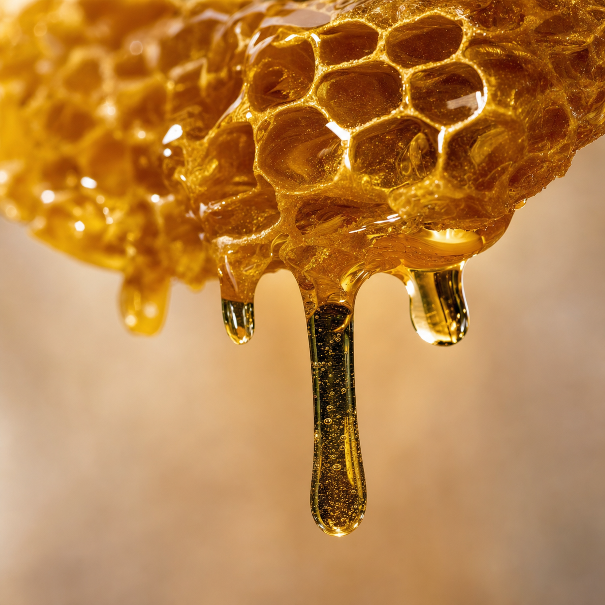

Fascinující objev o starodávném rituálu se začal rychle šířit mezi těmi, kteří hledají způsob, jak si udržet bystrou mysl. Nejedná se o běžný med ze supermarketu, ale o specifický biologický proces známý jako „medový mechanismus“, který má nečekaný dopad na to, jak náš mozek zpracovává informace.
Vědci si všimli, že určité vzácné sloučeniny obsažené v tomto „tekutém zlatě“ působí jako přirozená podpora pro neuronální spojení. Otázka, která trápí mnohé, zní: jak může tak jednoduchá ingredience být klíčem k obnovení duševní jasnosti, kterou mnozí považovali za ztracenou?
V České republice stále více seniorů uvádí, že tento 30sekundový rituál zcela změnil způsob, jakým si pamatují detaily, jména a důležité okamžiky. Zvědavost je na vrcholu: co přesně dělá tento druh medu tak odlišným a proč jsme se o tom dozvěděli až teď?
Pokud jste si všimli drobných výpadků paměti nebo si prostě chcete chránit svou mentální agilitu, musíte pochopit vědu za tímto přírodním mechanismem. Je to jemná metoda, která však zpochybňuje vše, co jsme věděli o kognitivním stárnutí.

Připravili jsme exkluzivní video prezentaci, která odhaluje přesně to, proč je tento druh medu považován za „tichý zázrak“ pro paměť a jak můžete z tohoto mechanismu těžit i vy, a to již od dnešního dne.
Zjistěte tajemství bystré paměti zde